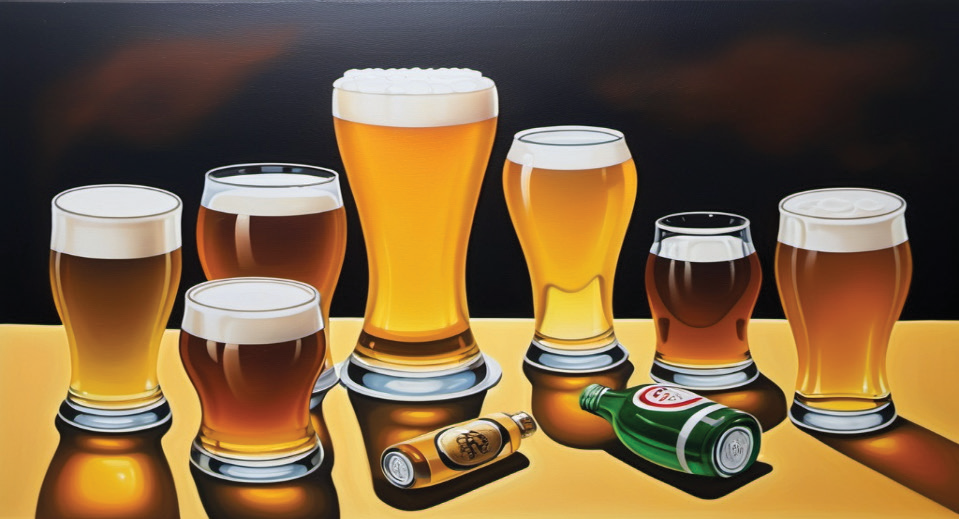

The risks of consuming alcohol and drugs
Alcohol and alcoholic beverages contain ethanol which is psychoactive and toxic substance with dependence properties. It is a chemical (mostly ethanol) found in some liquids like beer, liquor and wine. Drug is a medicine or other substance which has a physiological effect when ingested or otherwise introduced into the body. Drug abuse refers to the use of illegal drugs or the use of prescription or over - the - counter drugs for purposes other than those meant to be used, or used in excessive amounts. Examples of drugs are opioids (e.g. painkillers), stimulants (e.g. amphetamines), depressants (e.g. alcohol), hallucinogens (e.g. LSD) and dissociatives. All these have dangerous mental and physical repercussions. Figure 3.13 shows one of alcohol stuff.

Taking alcohol has detrimental effects to an individual and society such as causing addiction, financial pressure and may increase debts. Furthermore, it may cause misunderstanding and unnecessary family conflicts. Again, it may lead to marriage and relationship breakups. Not only that but also, consumption of alcohol and drugs damages one’s health and exposes an individual to risks of contracting infectious diseases. Alcohol is also a source of accidents and injuries, mental illnesses and violent behaviour. Finally, it may lead to death and loss of productive man power.
Use library and internet sources, and read Genesis 9, then answer the following questions:
(a) Explain the meaning of alcohol and drugs.
(b) Describe ten effects of alcohol and drug abuse in your society.
(c) Identify different types of drugs in your community.